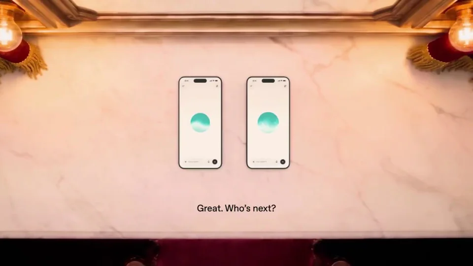
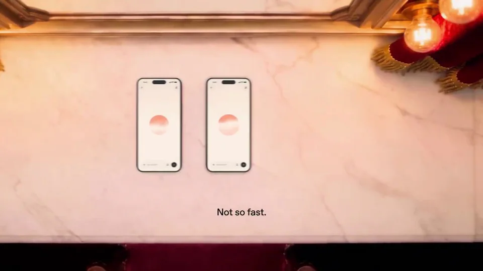
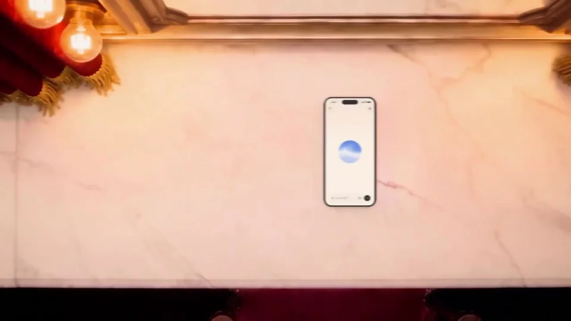
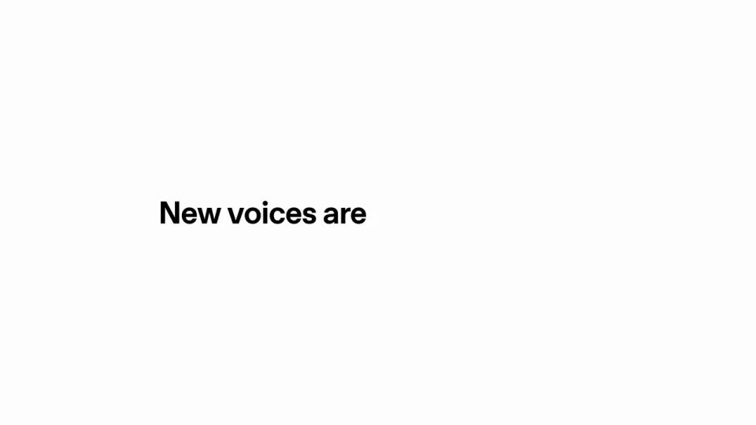

OpenAI / V014
GPT-Live-1.1 语音更新
把不同声音编排成一场点名：镜头寻找手机组，字幕给出回应，最后一台单独出现。
构图与编排 可播放 · 可替换内容
整体编排规则示例
查看 HTML 源码
<!doctype html><html lang="zh-CN"><meta charset="utf-8"><meta name="viewport" content="width=device-width,initial-scale=1"><title>GPT-Live-1.1 语音更新 · sequence</title><style>html,body{margin:0;width:100%;height:100%;overflow:hidden;background:#f3d4c3}canvas{display:block;width:100%;height:100%;object-fit:contain}</style><body data-mode="sequence"><canvas width="1000" height="600"></canvas><script src="data.js"></script><script src="common.js"></script><script src="scene.js"></script><script src="bridge.js"></script></body></html>画面元素舞台台面手机对彩色语音球字幕横移镜头
MOTION LANGUAGE
动作与构图
局部动作 · 构图规则
01
手机像演员一样站位
暖色台面上成对摆放手机，顶部和底部用舞台色块框住画面。不同语音球采用独立颜色，字幕用小号无衬线，固定在下方。
02
每次横移只介绍一组
每次横移只介绍一组规则示例
查看 HTML 源码
<!doctype html><html lang="zh-CN"><meta charset="utf-8"><meta name="viewport" content="width=device-width,initial-scale=1"><title>GPT-Live-1.1 语音更新 · sequence</title><style>html,body{margin:0;width:100%;height:100%;overflow:hidden;background:#f3d4c3}canvas{display:block;width:100%;height:100%;object-fit:contain}</style><body data-mode="clip" data-start="4" data-end="23"><canvas width="1000" height="600"></canvas><script src="data.js"></script><script src="common.js"></script><script src="scene.js"></script><script src="bridge.js"></script></body></html>镜头先到位，再让当前手机回应。下一组回应前做同方向横移，手机与字幕同步切换；其余组保持安静。
03
最后一台改变重复节奏
前面的成对排列建立预期，末段改成单台，给它单独的停留，再收束为功能名。
04
角色和对白可以替换
可改为多种助手、服务或人物介绍。先安排每次问答和最后的特殊角色，再配字幕与声音；保持每一组的颜色和身份一致。
SEQUENCE
段落与节奏
点击段落，定位到上方编排示意。




画面参考 · 离散静帧
KEEP THE RELATIONSHIPS
制作其他主题
- 可用于多角色／多功能介绍；保留轮流回应和最后特别角色。
- 字幕须与声音时序另行对齐。
制作约束
舞台台面 / 手机对 / 彩色语音球 / 字幕 / 横移镜头
- 通过重复横移寻找不同手机组，像演员点名一样介绍声音。
- 各手机球体颜色对应不同声音组，字幕体现轮流回应。
- 末段从成对到单台形成节奏反差，再切白底落版。